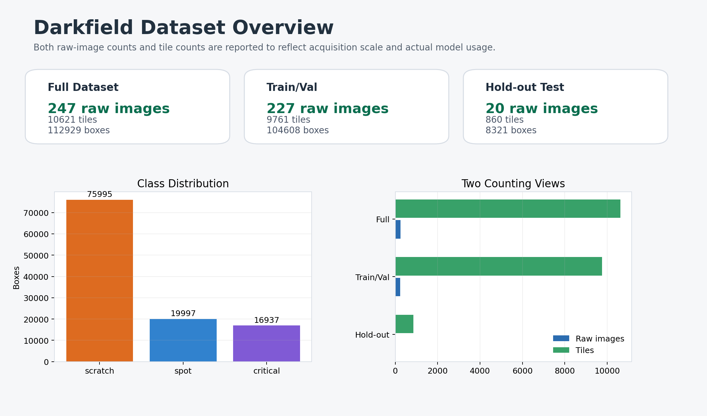
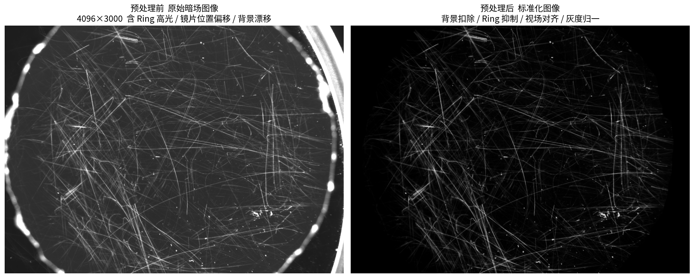
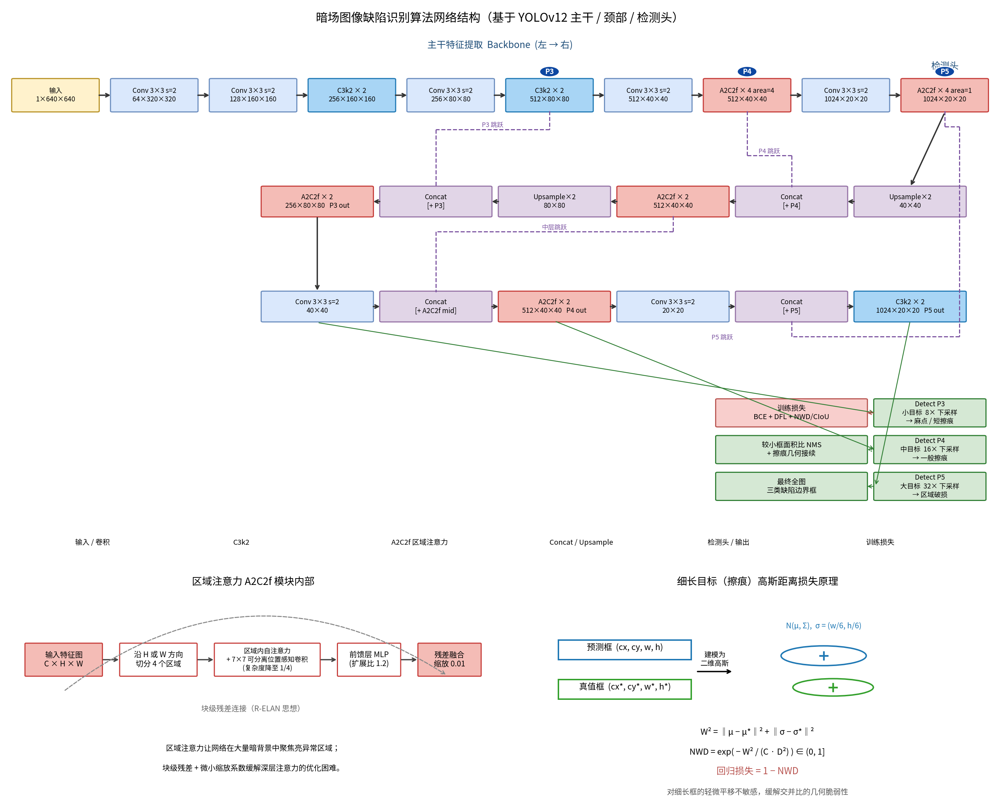
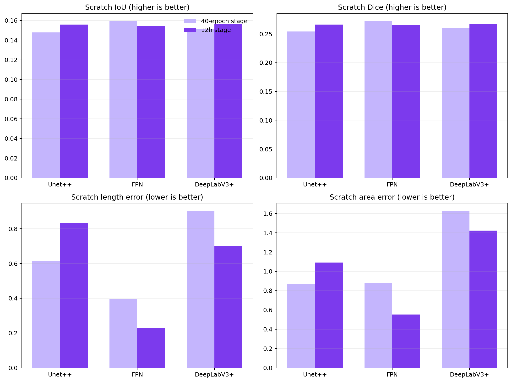
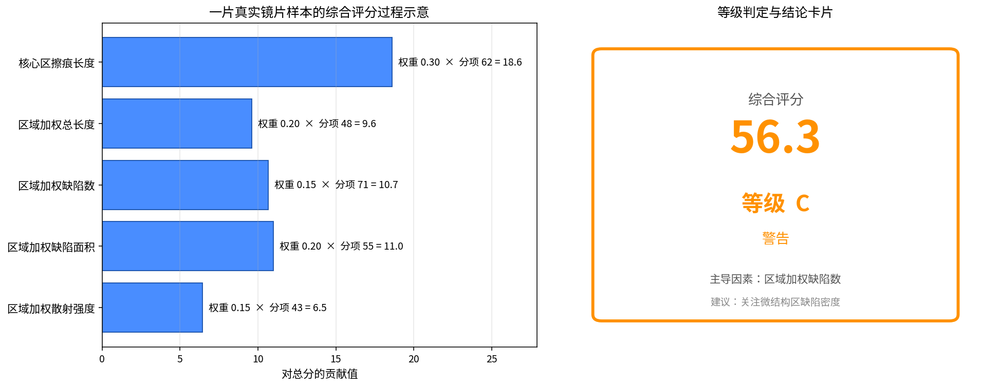
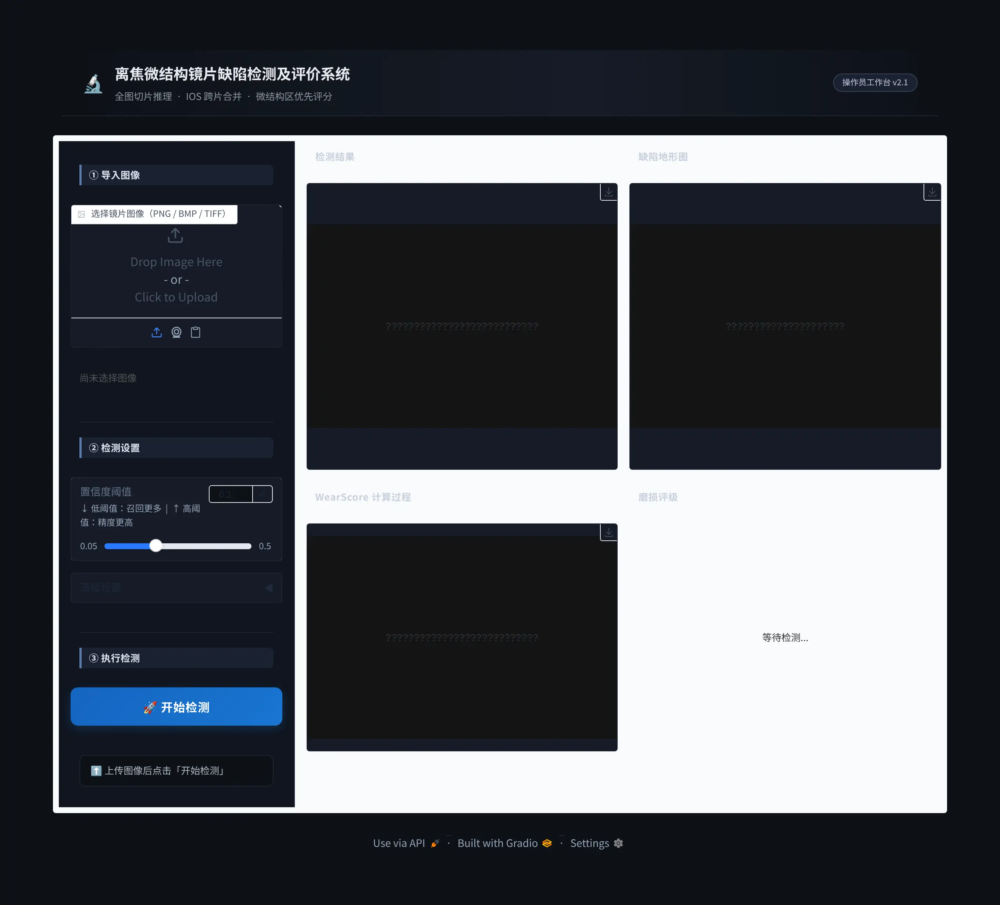

暗场镜片缺陷检测系统 — 模块化架构梳理
> 版本：v1.0（2026-05-31） | 视角：暗场图像缺陷识别算法开发 | 状态：阶段性成果，整体架构定型
本文从算法开发视角，把项目拆解为 8 个相对独立、接口清晰的模块：数据集 → 预处理 → 半监督标注 → 识别算法 → 分割算法 → 评估算法 → 前端系统 → 第三方测试。每个模块给出职责、关键代码路径、输入·输出、当前状态，便于协作者按模块接手。

0. 总览：双主线 + 八模块
系统收敛为两条主线：
- GUI 预发布主线 —— 面向非专业用户，单张镜片图像 → 缺陷检测 → 评分评级 → 结论（模块 ②④⑥⑦）。
- 研发与测试分支 —— 识别/分割算法改进、半监督标注迭代、独立 CNAS 第三方测试（模块 ①③④⑤⑥⑧）。
数据流主链：
原始暗场图像 ──①数据集──▶ ②预处理(ROI/亮度/配准) ──▶ ④识别(YOLO+SFE+NWD) ──┐
└──▶ ⑤分割(HRNet-OCR/SegFormer) ──┤
▼
⑥评估(mAP / WearScore 评级) ──▶ ⑦前端展示
▲
③半监督标注(伪标签/弱标签) ──回流──▶ ①数据集 │
⑧CNAS 第三方测试① 数据集模块
职责：管理暗场镜片原始图像、ROI 切片（tile）数据集、训练/验证/测试划分与清单（manifest）。
关键路径
- 数据根目录：
output/dataset_v2/（247 张全镜片图像 + 标定件，不入 Git） - 切片数据集构建：
scripts/build_tile_dataset.py（640×640，stride 480） - 数据加载抽象：
src/darkfield_defects/data/{dataset.py,loader.py} - 分割数据集准备：
scripts/prepare_msd_segmentation.py、prepare_ssgd_yolo.py - 测试集清单：
cnas_test/manifests/test_set_v1.json（860 tiles）
输入·输出：原始 .png 镜片图 → 切片 + YOLO 格式标签 + 数据集 yaml/manifest。
当前状态：dataset_v2 为生产基线数据；3 类缺陷 scratch / spot / critical。数据与代码物理分离，仅清单与模板入库。

② 预处理模块
职责：把成像条件不一致的暗场原图，归一化为可比、可检测的标准输入——抑制高光环、统一亮度、配准到模板坐标系、提取有效 ROI。
关键路径：src/darkfield_defects/preprocessing/
| 子模块 | 作用 |
|---|---|
background_fusion.py | 多张背景平均 → 生成离焦模糊模板 |
roi_builder.py | 高光 ring 结构掩膜 → 构建有效 ROI |
registration.py | 高光 ring 模板匹配（平移+旋转+缩放 ≤5%） |
brightness_correction.py | 线性亮度修正 + 图像最终化 |
circle_fitting.py / arc_extraction.py | 圆/弧几何拟合，定位镜片边界 |
pipeline.py | 编排：标定阶段 + 处理阶段，产出可复现的预处理结果 |
输入·输出：原始暗场图 + 背景图集 → ROI 掩膜 + 亮度修正后的标准图（含 JSON 元数据）。
当前状态：流水线稳定，已用于全量数据；标定与处理两阶段分离，参数可复现。

③ 半监督标注模块
职责：在有限人工标注下，通过标签清洗、伪标签、弱标签扩充训练数据，并对标注质量做审计回流。
关键路径（脚本化迭代，scripts/）
step1_label_cleanup.py→step2_pseudo_labels.py→step3_retrain.py→step4_compare.py→step5_retrain.py：标注-训练闭环generate_weak_masks.py：分割弱标签生成（私有数据）audit_stage2_labels.py、relabel_merge_critical.py：标注审计与关键类合并- 产物：
output/pseudo_labels/（不入 Git）
输入·输出：人工标注 + 模型预测 → 清洗后标签 / 伪标签 / 弱掩膜 → 回流至 ① 数据集。
当前状态：检测伪标签闭环（stage1 → stage2_cleaned）已固化为生产基线；分割弱标签已生成并用于私有微调。
④ 识别算法模块（检测）
职责：在切片上检测三类缺陷并定位，是生产主线核心。基于 YOLOv12m，并探索 SFE（浅层特征增强）与 NWD（Normalized Wasserstein Distance）检测头改进。
关键路径
- 检测引擎与特征：
src/darkfield_defects/detection/（classical, features, preprocess, rendering, params） - ML 训练/推理：
src/darkfield_defects/ml/{models,sfe_modules,nwd_loss,train,predict}.py - 改进训练入口：
scripts/train_phase2_sfe_nwd.py、train_stage1_baseline.py - 全图推理流水线：
scripts/infer_full_pipeline.py（SAHI 切片 → IOS-NMS →connect_scratches链接 → WearScore）
输入·输出：标准切片 → 缺陷框（类别+置信度+坐标）→ 全图拼接框链。
当前状态（基线，CNAS 测试集 2026-03-22）
| 指标 | 值 |
|---|---|
| mAP@0.5 | 0.6765（通过 ≥60% 目标） |
| scratch AP | 0.4525（最大短板） |
| spot AP | 0.8180 |
| critical AP | 0.7589 |
> Phase 3B 检测头改进（SFE/NWD/SSGD 微调）经全量实验，均未超越基线 scratch AP；FN 分析定位根因为低对比度图像域偏移（非 bbox 几何问题），后续转向数据级对比度增强。生产部署仍采用基线权重 output/training/stage2_cleaned/weights/best.pt。

⑤ 分割算法模块
职责：像素级刻画缺陷形态（划痕、凹坑、大面积裂纹），为重叠缺陷结构解析与精细评分提供基础。研发分支，未进入生产主线。
关键路径
- 分割工厂与模型：
src/darkfield_defects/ml/{segmentation_factory.py,hrnet_ocr.py,models.py}（含 LightUNet 4 类基础模型） - mmseg 配置模板：
configs/segmentation/mmseg/（HRNet-OCR-W18 / HRNetV2-W18 / SegFormer-B2，各含 MSD 与 private 两套） - 训练入口：
scripts/train_msd_segmentation.py、train_private_segmentation.py、train_mmseg_experiment.py - 实验范式：MSD 公共数据预训练 → 私有弱标签微调 → 桥接评审（
run_bridge_review.py）
输入·输出：切片 → 缺陷分割掩膜（多类）→ 形态特征（供评估/重叠缺陷解析）。
当前状态：MSD 预训练 + 私有微调完成；多模型对比与可视化核查完成（Phase 3C–3F）。已可经 infer_full_pipeline.py --use-segmentation 集成，但未作为普通用户主线默认开启。

⑥ 评估算法模块
职责：两层评估——（a）算法精度评估（mAP / AP / 混淆矩阵）；（b）业务级 WearScore 磨损评分与评级，把检测/分割结果换算为可解释的 A/B/C/D 等级与结论。
关键路径
- 检测精度指标：
src/darkfield_defects/eval/metrics.py、scripts/compare_experiments.py、eval_utils.run_cnas_eval() - 磨损量化与评分：
src/darkfield_defects/scoring/{quantify.py,wear_score.py,report.py} - CNAS 固定评估参数：
conf=0.001, iou=0.6，860 tiles
WearScore 评分链路：五项贡献因子加权 → 总分 → 等级
| 贡献因子 | 含义 | 权重 |
|---|---|---|
| center_length | 中心区划痕 | 0.30 |
| effective_length | 区域加权长度 | 0.20 |
| defect_area | 区域加权面积 | 0.20 |
| defect_count | 区域加权缺陷数 | 0.15 |
| scatter_intensity | 区域加权散射 | 0.15 |
等级阈值（2026-03-22）：A < 25，B < 50，C < 80，D ≥ 80。
输入·输出：缺陷框/掩膜 → 精度指标（评测）/ 磨损分+等级+结论（业务）。

⑦ 前端系统模块
职责：面向非专业操作员的工作台。四步流程：导入镜片图像 → 执行缺陷检测 → 查看四联结果（检测叠加图 / 缺陷地形图 / 评分过程图 / 评级卡片）→ 得到分析结论。
关键路径
- GUI 主程序：
src/darkfield_defects/viz/app.py（Gradio，左控制面板 25% + 右 2×2 结果网格 75%） - 应用服务层：
src/darkfield_defects/app_services/inference_service.py（run_full_image_inference、get_default_weights_path） - 默认权重：
output/experiments/phase3e/detection_training/b2_nwd_only_phase3e/weights/best.pt
启动
uv run python -m darkfield_defects.viz.app # http://127.0.0.1:7860输入·输出：单张镜片图像 → 检测叠加图 + 缺陷地形图 + WearScore 计算过程 + A/B/C/D 评级卡。
当前状态：预发布主线，四步流程可用；不含批量处理、训练入口、研究脚本、CNAS 执行入口。

⑧ 第三方测试模块（CNAS）
职责：独立、可复现的第三方算法准确率测试子系统，产出符合 CNAS 留痕要求的测试报告与见证材料。与生产系统解耦，单独运行。
关键路径：cnas_test/
| 子目录 | 内容 |
|---|---|
runner/ | 评测主流程：run_eval.py、evaluator.py、dataset_loader.py、report*.py、provenance.py、screenshot.py |
manifests/ | 测试集清单（test_set_v1.json、full_dataset_v1.json） |
templates/ | 测试大纲/报告模板 |
tools/ | Word 同步、环境记录、报告构建工具 |
outputs/ | 评测运行产物（不入 Git，归档保存） |
运行
uv run python -m cnas_test.runner.run_eval --help输入·输出：固定测试集 + 待测权重 → 评测指标 JSON + Markdown/HTML/Word 报告 + 过程截图与溯源信息。
当前状态：评测流程、报告生成、过程留痕、溯源（provenance）均已实现并跑通；测试结果与交付件归档于 output/_doc_archive/ 与 cnas_test/outputs/。
模块接口与依赖一览
| 模块 | 上游输入 | 下游输出 | 入 Git |
|---|---|---|---|
| ① 数据集 | 原始暗场图 | 切片+标签+清单 | 仅清单/模板 |
| ② 预处理 | 原图+背景 | 标准图+ROI | ✅ 代码 |
| ③ 半监督标注 | 标注+预测 | 伪/弱标签 | ✅ 脚本 |
| ④ 识别 | 标准切片 | 缺陷框链 | ✅ 代码 |
| ⑤ 分割 | 切片 | 缺陷掩膜 | ✅ 代码/配置 |
| ⑥ 评估 | 框/掩膜 | 指标+评级 | ✅ 代码 |
| ⑦ 前端 | 单张镜片图 | 四联结果+结论 | ✅ 代码 |
| ⑧ 第三方测试 | 测试集+权重 | 报告+留痕 | ✅ 代码/模板 |
统一约定：数据集、训练输出、实验产物、权重、评测运行产物、归档文档均位于 output/ 与 runs/，默认不入 Git；仓库仅同步源码、配置、测试、轻量清单/模板与成果型文档。